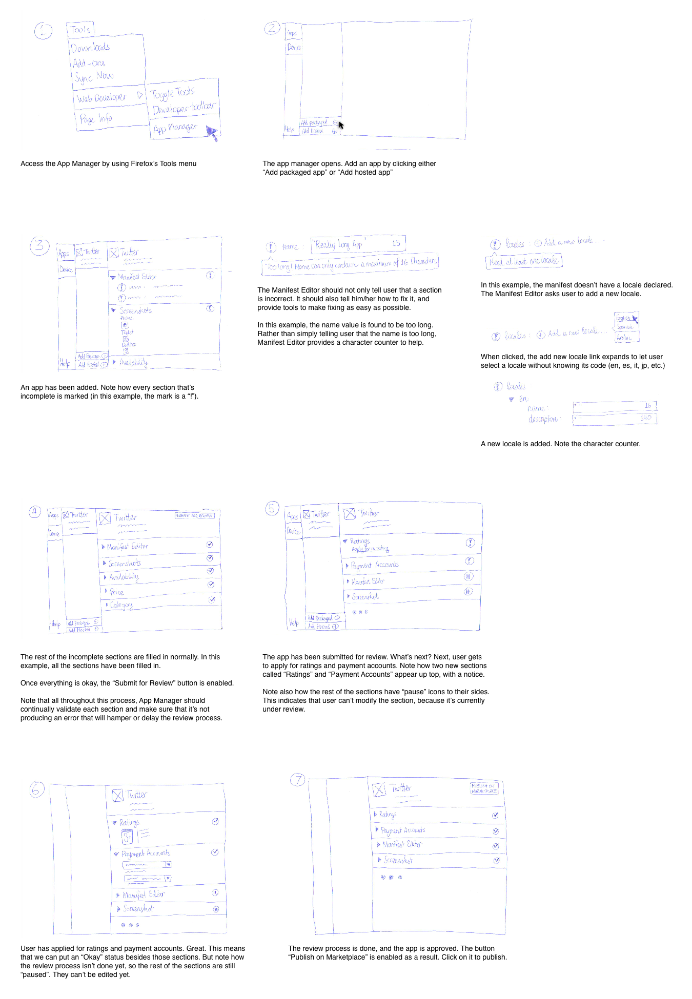

---
layout: MarketplaceUXSpec
multipage: true
---	

<div class="container">
	<h1>Devhub is a dropoff service - Flow explorations</h1>
	<p><a href="javascript: history.go(-1)">&laquo; back</a></p>

	<div class="row">
		<div class="col-sm-12 col-md-12 col-lg-12">
			<div class="thumbnail">

				<p>See also the <a href="http://24i5pa.axshare.com">interactive flow exploration.</a></p>

				
			</div>
		</div>
	</div>

	